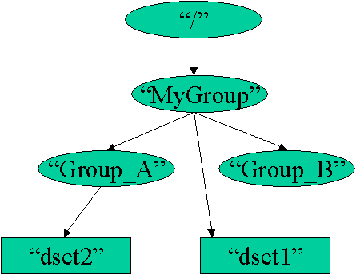

+++++++++++++++++++++++++++++++++++++++++++++++++++++++++++++++++++++
#include <hdf5.h>
#define FILE "groups.h5"
main() {
hid_t file_id, group_id, dataset_id, dataspace_id; /* identifiers */
hsize_t dims[2];
herr_t status;
int i, j, dset1_data[3][3], dset2_data[2][10];
/* Initialize the first dataset. */
for (i = 0; i < 3; i++)
for (j = 0; j < 3; j++)
dset1_data[i][j] = j + 1;
/* Initialize the second dataset. */
for (i = 0; i < 2; i++)
for (j = 0; j < 10; j++)
dset2_data[i][j] = j + 1;
/* Open an existing file. */
file_id = H5Fopen(FILE, H5F_ACC_RDWR, H5P_DEFAULT);
/* Create the data space for the first dataset. */
dims[0] = 3;
dims[1] = 3;
dataspace_id = H5Screate_simple(2, dims, NULL);
/* Create a dataset in group "MyGroup". */
dataset_id = H5Dcreate(file_id, "/MyGroup/dset1", H5T_STD_I32BE, dataspace_id
,
H5P_DEFAULT);
/* Write the first dataset. */
status = H5Dwrite(dataset_id, H5T_NATIVE_INT, H5S_ALL, H5S_ALL, H5P_DEFAULT,
dset1_data);
/* Close the data space for the first dataset. */
status = H5Sclose(dataspace_id);
/* Close the first dataset. */
status = H5Dclose(dataset_id);
/* Open an existing group of the specified file. */
group_id = H5Gopen(file_id, "/MyGroup/Group_A");
/* Create the data space for the second dataset. */
dims[0] = 2;
dims[1] = 10;
dataspace_id = H5Screate_simple(2, dims, NULL);
/* Create the second dataset in group "Group_A". */
dataset_id = H5Dcreate(group_id, "dset2", H5T_STD_I32BE, dataspace_id, H5P_DEFAULT);
/* Write the second dataset. */
status = H5Dwrite(dataset_id, H5T_NATIVE_INT, H5S_ALL, H5S_ALL, H5P_DEFAULT,
dset2_data);
/* Close the data space for the second dataset. */
status = H5Sclose(dataspace_id);
/* Close the second dataset */
status = H5Dclose(dataset_id);
/* Close the group. */
status = H5Gclose(group_id);
/* Close the file. */
status = H5Fclose(file_id);
}
+++++++++++++++++++++++++++++++++++++++++++++++++++++++++++++++++++++
Fig. 10.1 The Contents of 'groups.h5'
Fig. 10.2 'groups.h5' in DDL
HDF5 "groups.h5" {
GROUP "/" {
GROUP "MyGroup" {
GROUP "Group_A" {
DATASET "dset2" {
DATATYPE { H5T_STD_I32BE }
DATASPACE { SIMPLE ( 2, 10 ) / ( 2, 10 ) }
DATA {
1, 2, 3, 4, 5, 6, 7, 8, 9, 10,
1, 2, 3, 4, 5, 6, 7, 8, 9, 10
}
}
}
GROUP "Group_B" {
}
DATASET "dset1" {
DATATYPE { H5T_STD_I32BE }
DATASPACE { SIMPLE ( 3, 3 ) / ( 3, 3 ) }
DATA {
1, 2, 3,
1, 2, 3,
1, 2, 3
}
}
}
}
}